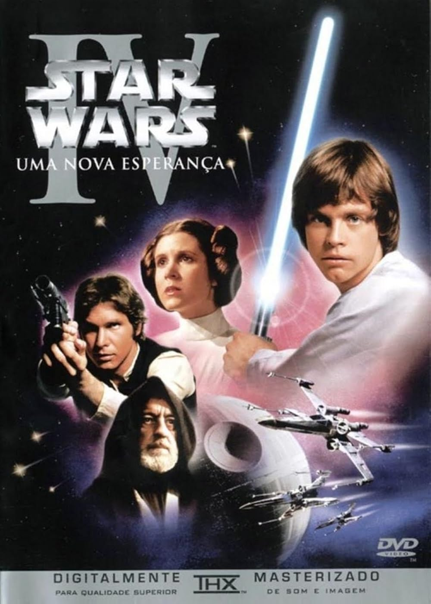
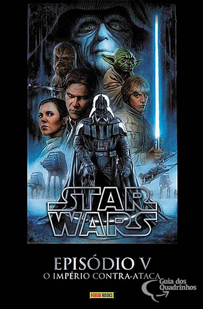
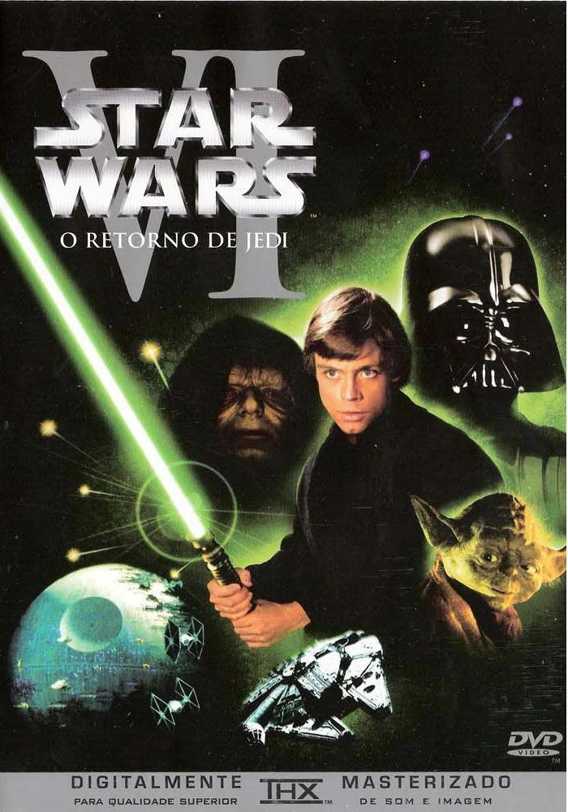
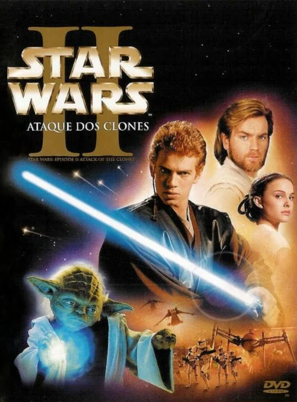
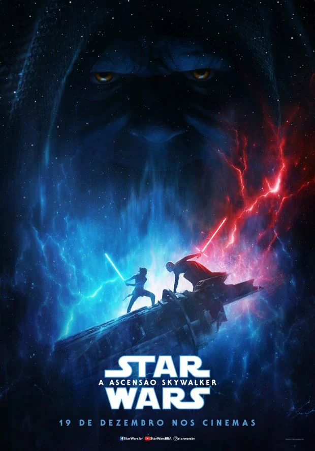

Filmes
Star Wars: Episódio IV - Uma Nova Esperança
A princesa Leia é mantida refém pelas forças imperiais comandadas por Darth Vader. Luke Skywalker e o capitão Han Solo precisam libertá-la e restaurar a liberdade e a justiça na galáxia.
Data de lançamento: 18 de novembro de 1977
Star Wars: Episódio V - O Império Contra-Ataca
Após a destruição da Estrela da Morte, as forças imperiais continuam a perseguir a Aliança Rebelde. Luke Skywalker começa seu treinamento Jedi com Yoda, enquanto seus amigos são perseguidos por Darth Vader.
Data de lançamento: 21 de maio de 1980
Star Wars: Episódio VI – O Retorno de Jedi
Luke Skywalker e seus amigos viajam para Tatooine para salvar Han Solo. Enquanto isso, o Império Galático começa a construção de uma segunda Estrela da Morte para aniquilar a Aliança Rebelde de uma vez por todas.
Data de lançamento: 6 de outubro de 1983
Star Wars: Episódio I – A Ameaça Fantasma

Obi-Wan e seu mentor embarcam em uma perigosa aventura na tentativa de salvar o planeta das garras de Darth Sidious. Durante a viagem, eles conhecem um habilidoso menino e decidem treiná-lo para se tornar um Jedi. Mas o tempo irá revelar que as coisas nem sempre são o que aparentam ser.
Data de lançamento: 24 de junho de 1999
Star Wars: Episódio II – Ataque dos Clones
Dez anos após o primeiro encontro, Anakin Skywalker vive um romance proibido com Padmé, enquanto Obi-Wan investiga uma tentativa de assassinato do senador e descobre um exército secreto de clones criado para tentar destruir os Jedi.
Data de lançamento: 16 de maio de 2002
Star Wars: Episódio III – A Vingança dos Sith

As Guerras Clônicas estão em pleno andamento e Anakin Skywalker mantém um elo de lealdade com Palpatine, ao mesmo tempo em que luta para que seu casamento com Padmé Amidala não seja afetado por esta situação. Seduzido por promessas de poder, Anakin se aproxima cada vez mais de Darth Sidious até se tornar o temível Darth Vader. Juntos eles tramam um plano para aniquilar de uma vez por todas com os cavaleiros jedi.
Data de lançamento: 19 de maio de 2005
Star Wars: Episódio VII – O Despertar da Força

A queda de Darth Vader e do Império levou ao surgimento de uma nova força sombria: a Primeira Ordem. Eles procuram o jedi Luke Skywalker, desaparecido. A resistência tenta desesperadamente encontrá-lo antes para salvar a galáxia.
Data de lançamento: 17 de dezembro de 2015
Star Wars: Os Últimos Jedi

A tranquila e solitária vida de Luke Skywalker sofre uma reviravolta quando ele conhece Rey, uma jovem que mostra fortes sinais da Força. O desejo dela de aprender o estilo dos Jedi força Luke a tomar uma decisão que mudará sua vida para sempre. Enquanto isso, Kylo Ren e o General Hux lideram a Primeira Ordem para um ataque total contra Leia e a Resistência pela supremacia da galáxia.
Data de lançamento: 14 de dezembro de 2017
Star Wars: A Ascensão Skywalker
Com o retorno do Imperador Palpatine, a Resistência toma a frente da batalha. Treinando para ser uma completa Jedi, Rey se encontra em conflito com passado e futuro, e teme pelas respostas que pode conseguir com Kylo Ren.
Data de lançamento: 19 de dezembro de 2019